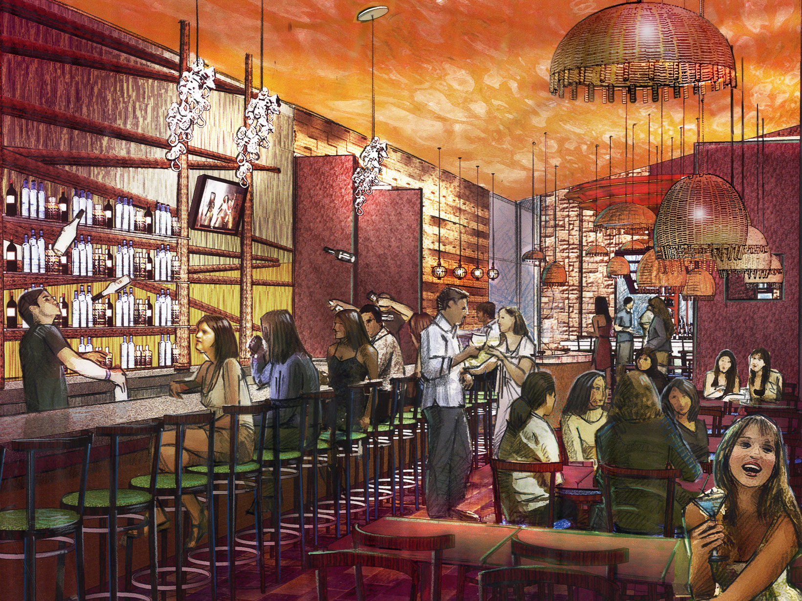
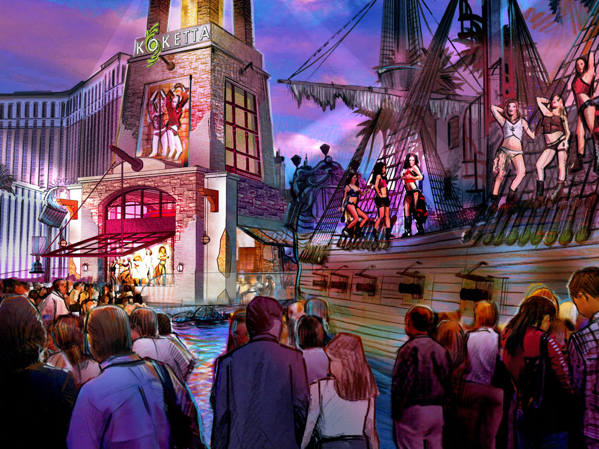

To better connect guests of the Sirens show on Las Vegas Blvd at Treasure Island to the Treasure Island casino, Koketta, a new restaurant right on the strip, blends dining and cocktails with Vegas style entertainment. As the show ends, spectators are drawn to Koketta’s lighthouse by the call of the Sirens and everyone’s invited to join the party! Inspired by the many ships the Sirens have called to their doom on the coastal rocks, the Tower and Sail Loft bar are both energized by theatrical lighting and world-class bar flare. Then, on to Siren’s Lair for a "bottom-of-the-sea" dining experience!


- 
- 